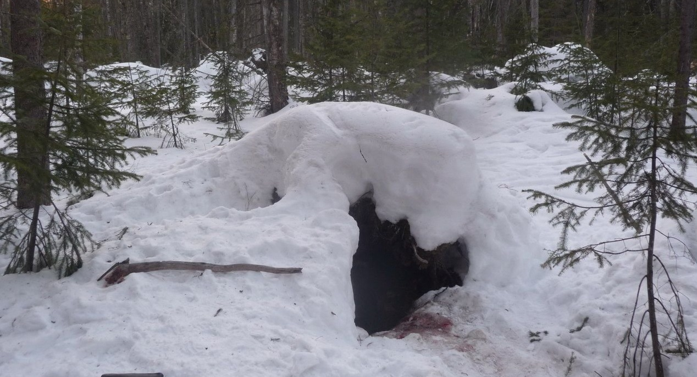

Кое-что о медведях
Пробуждение медведя
Скоро весна!
Первыми пробуждаются и выходят из берлог взрослые самцы или особи неудачно устроившие себе
берлогу (если ее затопило), молодые одиночные особи, позже всех - самки с медвежатами. По началу
они не уходят далеко от берлоги и в случае непогоды могут укрываться в ней. Самцы по пробуждению
почти сразу начинают метить территорию, пока еще без особого усердия, только чешутся. Нередко
слышен рев. Считается, что медведи ревут от расстройства пищеварения в процессе отхождения кишечной
пробки.
послушай
Скорость медведя

Максимальная скорость бега бурого медведя на короткой дистанции - 50 км/ч.
Дыхание медведя после забега
| Видов медведей | Скорость, км/ч |
|---|---|
| Бурый медведь | 50 |
| Североамериканский черный медведь (барибал) | 48 |
| Очковый медведь | |
| Малайский медведь | |
| Гималайский медведь | 40 |
| Белый медведь | |
| Медведь панда | 32 |
| Губач |
В начало